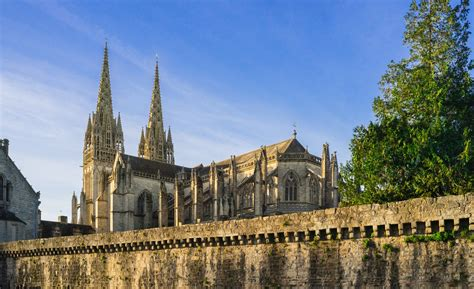

Bretagne
Vue d'ensemble
La Bretagne est une région culturelle et historique située dans le nord-ouest de la France. Bordée par la mer sur trois côtés, elle est célèbre pour son littoral accidenté, son héritage celtique, ses villes médiévales et ses traditions uniques. La région possède sa propre langue, le breton, d'origine celtique.
Informations Rapides
- Capitale: Rennes
- Langues régionales: Français et breton
- Population: ~3,3 millions
- Réputée pour: Culture celtique, fruits de mer, côtes sauvages
- Le Saviez-Vous? La Bretagne possède plus de 2 700 kilomètres de côtes — le plus long de toutes les régions françaises !
Plats Populaires
Crêpes & Galettes
Kig Ha Farz

Cotriade

Far Breton
Sites Célèbres
Alignements de Carnac
Saint-Malo

Pointe du Raz

Forêt de Brocéliande
Cathédrale de Quimper

Période Idéale pour Visiter
La meilleure période pour visiter la Bretagne est de mai à septembre, lorsque le climat est doux et que de nombreux festivals traditionnels bretons ont lieu.
Symboles Régionaux
- Drapeau:
- Blason: